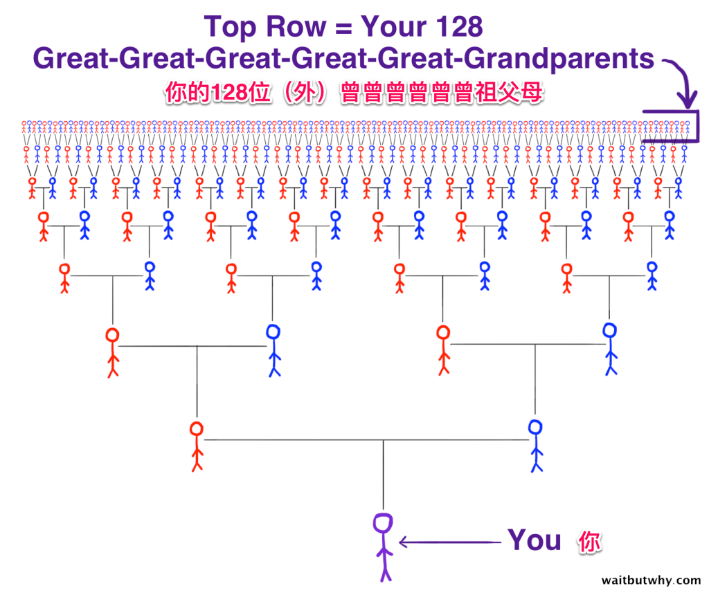
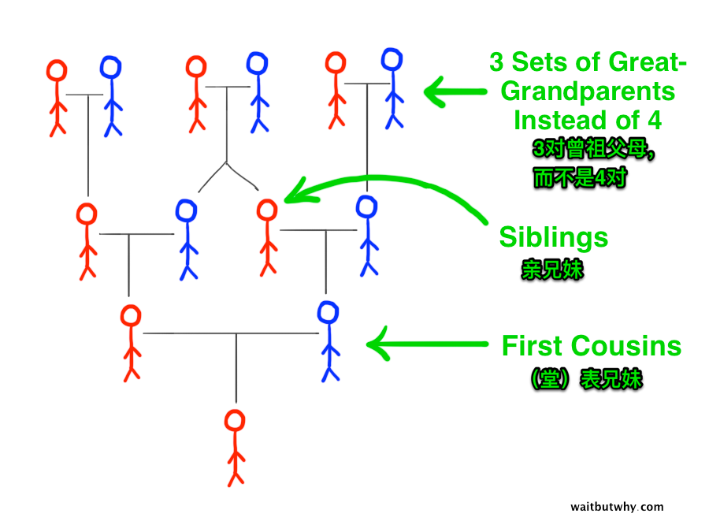
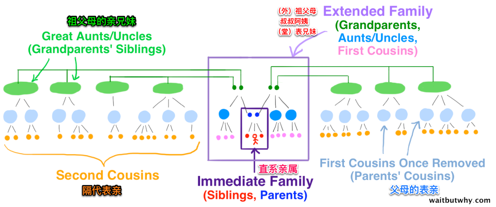

你能想象在不远的过去，可能有成百上千的人都是你的(外)曾曾曾曾曾祖父母吗？
你能想象在眼下的世界，可能所有的人都是你亲戚吗？只是你不清楚当中隔了多少代。
你能想像在不久的将来，可能会有成千上万的子孙吗？他们互相之间或许早已互不相识。
这是一篇翻译类原创文章，来源依旧是WBW–Wait But Why。作者在文中就从时间和空间两个方向展开，讨论和分析了我们每一个人类个体其实都是一个超级庞大家族中的一员，并且鼓励大家尽量的去和自己健在的祖辈多聊聊天，了解他们甚至他们父辈的生活和故事，这是非常有意思也有意义的。
我的（外）祖父母这一辈，目前还健在的就只有我奶奶了，今年89岁，我们平时都会亲切的称她为「娜娜」。
最近正好去探望过她老人家一次，期间发生的事和以往并没有太大的区别，依旧需要大声的和她说话，帮她捣鼓捣鼓她认为坏掉的电脑（其实问题只是她把窗口最小化了），顺便帮她干一些基本的农活收拾收拾花园。值得一提的是，这一次，我做了一件从小到大都没有像摸像样做过的事情，就是问娜娜关于我们家族的一些问题。
虽然你我素不相识，但是我几乎可以肯定，你也从来没有仔细的从你的（外）祖父母那里打听过他们过去的生活或者他们父母的生活是什么样的。我们总是关注自己的一小片天地，忽视了我们周围的一些其它有意义的事情。甚至我们总是会通过网络来了解一些我们国家或者世界的历史，但是却对自己家族的历史视而不见，这正是我们所缺失的。自己家族的故事对于外人来说或许微不足道，所以无法通过搜索引擎搜索到，因而，口口相传成为了自己家族历史唯一传承的方式。
我祖母娜娜总是说她自己是最后一位莫希干人，她的丈夫、兄弟姐妹、亲戚朋友都已经相继过世。而这意味着，关于我们家族上几代历史的细节现在存在且仅存在于一个89岁的大脑里，如果我再不抓紧机会尽量多的挖掘这些历史信息的话，或许不久之后将永远消失。所以我决定从这一次拜访开始多问些这方面的问题。
我了解到了更多祖母童年生活的一些细节。我知道我的祖父母的童年是生活在在大萧条时期，但是对那时的细节并不了解，比如祖母说她曾经亲眼见到一对母女被地主扫地出门，在街道上挨饿受冻，直到原本也十分贫困的邻居们纷纷掏出一两个硬币给她们，她们才得以租个地方生活下去。
我同时也了解到了更多关于我父亲这条线上的四位太祖父母的生活，同样的，此前我只知道一些大概，而经过这次对他们的生活有了更形象的了解。他们当中有三位是在纽约的孤儿院长大的，而第四位在她十六七岁的时候抛弃一切，只身一人从拉脱维亚乘船穿越大西洋来到纽约，在血汗工厂里打工。
另外我第一次听到了我祖母的祖母的故事，她也是自己从拉脱维亚来的这里并在这里成家和生活。她是1941年去世的，在她去世后几个月，她的四个儿子（由于需要继续经营一些家族生意，没有像他们的母亲和姐姐一样离开拉脱维亚）都在拉脱维亚死于大屠杀。
此前我对这些一无所知，我怎么可能知道我太祖母的四个兄弟是死于大屠杀的呢？至此，我第一次对我太祖父母和太太祖母有了清晰的认识，以至于我对此前的人生对他们的一无所知感到羞愧，尤其是他们所经历的屠杀、血汗工厂、大萧条等，正是他们的这些经历才有了我今天的生活。
当我高兴的认为我可以绘制下面这样的草图来描述那些我了解的上几代人的时候，我发现我很快就高兴不起来了，因为还有这么多灰色区域的祖辈是我所没有了解的。

于是我开始思考家谱的神器。如果我一直向上追溯会的到什么结果？和我相隔四代的旁系表亲有多少？他们又在哪里干着什么？到2300年的时候我是不是也是某个熊孩子的祖先？而且是他几百个祖先中的一个呢？
过去：你的祖先图谱
那么我们先跟随时间的顺序从过去聊起，看一看从族谱向上追溯会是一个什么样的情况。

从图上可以明显的看出，当向上追溯7代之后，在你的曾曾曾曾曾祖父那一代又128个人是和你有直系血缘关系的。假设平均每一代的时间是25～30年的话（也就是25到30岁左右养育下一代，实际上应该比这个数字要小一点，古代的人结婚生子普遍比较早），那么着128个人大约生活在1800～1825年。所以从某种意义上来说今天的你就是由这128个19世纪初的人每人贡献的1／128的基因决定的。
这些人都是些谁呢？他们生活在哪里？他们都以什么为生？他们会有什么样不幸遭遇？他们曾经取得了什么样的成就？族谱中的这254对亲子关系如何？这当中的252对婚姻关系又如何？是相亲相爱呢还是互相伤害呢？
让我感到惊叹的是，在这短短的200年里，就有127对浪漫的爱情故事（至少可以肯定在造人的时候他们的爱情是浪漫的），而你可以说就是这200年里127次啪啪啪的产物。
好吧，这没什么好难为情的，让我来试着往上在多追溯几代：
仅仅在向追溯5代，情况就变得复杂了许多，看起来这样的增长速度十分的疯狂。在你的曾…曾（10个）祖父这一代已经有4096个直系祖先了。这些人大多生活在17世纪中叶，也差不多正是欧洲文艺复兴时期。
所以你会发现，有人如果告诉你说他是几百年前某个皇室的后代也不足为奇。从图上可以明显的看出来，300年前有多少人都是你的祖先！这当中很有可能就有皇族，学者，战士，画家，或者还有娼妓，杀人犯，疯子等等形形色色的人。
最后我想要强调的一点就是，对于你来说，这个图最上层的4096个人缺一不可，无论他们是什么样的人，少了其中任何一个都不会有今天的你，当然，也不会有很多其他的人。
说到这里你可能注意到了，这种往前追溯的方式或许是不准确的，应为按照这种指数级的增长方式的话， 往前倒推300年我们有4096个祖先，那么继续再推几百年的话，我们可以的到下面这样的示意图:
到公元1100左右你就会有680亿个祖先，但是这显然是不可能的，因为全球的的人口数量差不多是下面这样的走势：
那么这个我们如何解释呢？
答案竟然是近亲结婚。比如表兄妹结婚，他们孙子辈在曾祖父母这一代就只有六个祖先，而不是原先我们计算的八个。

你或许会感到困惑，但是事实就是根据罗格斯大学的人类学教授Robin Fox的研究结论，历史上80％的婚姻都发生在两代以内旁系血亲甚至更亲的亲戚之间。
之所以会是这样的结果主要是因为人类历史上大多数人的一生都只在方圆很小的范围内活动，那么人们也会选择相应范围内的人组成家庭。在过去的西方世界这是一种很普遍的现象，而在现代的中东和北非地区，仍然有50％左右的婚姻是发生在两代以内的旁系表亲之间的。
所以，之前我们计算的数字会有很多人实际上是被重复统计了，实际数字要比理论的少很多，即使是往前追溯10代，实际的祖先人数也要比4096小很多。由于近亲婚姻的存在，如果我们一直向上追溯我们的族谱的话，到后来数字反而会变的越来越小：
这当中人数最多的时期差不多时公元1200年，我们的祖先数量接近人类人口总数。从这个时期再往前，近亲婚姻的影响变的更加明显，祖先的数量开始成倍的减少。
现在：你的亲戚们
从前面的内容我们可以发现，我们每一个人在历史上曾经存在过的亲人总数是疯狂的，那么，具体到当下，就在现在这一刻，地球上有多少人是和我们有亲戚关系的呢？
最简单的回答，实际上每一个人都有可能是你的远房表亲，只是这当中相隔了多少代的问题。比如你的表（堂）兄妹只需要往上追溯两代，你们有共同的（外）祖父母，他（她）们是你父母亲兄妹的孩子，而你父母（堂）表兄妹的孩子也是你的（堂）表兄妹，只是当中多隔了一代，你和他们有共同的曾（外）祖父母。
很多人不太搞得清楚（堂）表兄妹的关系，这里我简单的画了个图，希望可以更直观的理解什么是隔代表亲。

从图上可以看出三点：
1.你的父母是你隔代（堂）表兄妹父母的（堂）表兄妹。
2.你的祖父母是你隔代（堂）表兄妹祖父母的亲兄妹。
3.你和你的隔代（堂）表兄妹有共同的（外）曾祖父母。
而要是三代表亲的话，就是把所有的情况再往上递推一层，即你的父母和你的三代表亲的父母是隔代表亲，你的祖父母和你的三代表亲的祖父母是表亲，你们有相同的（外）曾曾祖父母。
我们可以发现，你的表亲的数量随着和你间隔的代数的增加也会呈指数级增加。你或许只有几个（堂）表兄妹，但是有几十个隔代（堂）表兄妹，几百个隔三代的（堂）表兄妹，几千个隔五代的（堂）表兄妹，几百万个隔八代（堂）表兄妹。
通过一些具体的研究，我得出了如下公式：
其中n表示的是每个家庭的平均孩子数量，d表示的是和你相隔几代。
那么假设平均一个家庭有两个孩子，那么要计算隔三代表亲的数量的话，我们的n是2，d是3，得出结果为：
而假设每个家庭有三个孩子的话，你的隔四代表亲数量有：
自己随意的设置n可能不太靠谱，所以我们或许可以从国家公布的家庭平均孩子数量作为n的取值标准，下面我列了一些我查到的国家的数据，以及基于此数据计算的四代以内旁系表亲的数量：
一个更有意思的发现是如果用全球的家庭平均子女数量2.36代入上面公式计算的话，由于指数级的增长，最后可以得出结论，地球上和你关系最远的人，也是你的隔15代表亲。由于地域和文化的差别，每个家庭的孩子数量存在很大的差别，所以实际上和你关系最远的表亲可能再隔15代和隔50代之间。
无论怎样，你在这个世界上或许有成百上千的隔三代表亲，而你或许正在和他（她）们作同事、朋友，甚至在交往……
换个角度从上往下想的话，事情大概会是这样子的。你和你的亲兄妹在从小在一块儿长大，你的孩子和你亲兄妹的孩子是表亲，由于你和你的亲兄妹长大以后各自成家，可能有的还远走他乡，所以你们各自的孩子之间或许有联系，或许已经失联，而你们的孙子辈互相依旧熟悉的可能性就更低了。在往后，你和你亲兄妹的曾孙辈他们可能完全没有机会相识，而你们的曾曾孙辈或许是好朋友，但是并不知道他们的曾曾祖父母这一辈的祖先其实是亲兄妹。
这种情况如果发生在皇室，会是下图所描绘的场景。
未来：你的子孙图谱
你或许没有孩子，又或许你的孩子没有孩子，但是去除这种特殊情况，你都很有可能回是某个家族族谱金字塔最顶端的祖先。在你之后的两三百年，你们家族的繁衍情况很有可能是这样的：

让我们来给你的某个曾曾曾曾曾孙女Telia来个特写：
小Telia差不多出生于2300年，她对你的认知程度就和你对你生活在1800年的祖先的认知程度差不多，在她身上或许还能看到一两点和你相似的特点。
文章写到这里，我们差不多对自己在整个大家族中的位置有了清晰的了解，我们是过去几千对浪漫爱情的产物，我们和成千上万的隔n代表亲共同生活在一起，我们是未来一个大家族所有人的祖先。
然而，上面的祖先图谱和子孙图谱的金字塔其实都可以翻转过来看待。虽然在17世纪你有成千上万的祖先，然而，你其实也是其中某个祖先成千上万子孙中的一员，而对于小Telia来说，虽然你是她的祖先，然而，你也是她成千上万祖先中的一员。
上面这幅图最上面一行都是目前生活着的人，但是你真的无法知道这当中还有谁也会是Telia的祖先。
结论
我感到自己既特殊又重要，同时又觉得没有那么的重要甚至有时是无关紧要的。
我们生活着的意义或许知识基因的临时存储器，150年后现在生活着的所以70几亿人都会死去，而我们的基因都会得到传递。
我不知道得出第一条结论的感觉是好还是坏。但是对第二条结论感动很沮丧。为了继续积极乐观的思考，我想到或许随着科技的进步我的子孙不用在通过口口相传的方式来了解他们的祖先－－我了，100年后他们可以通过照片和视频清楚的了解我的生活。
不管怎样，对于我们这代人来说，想要了解自己祖辈的生活只能通过询问健在的亲人了，你也可以抓紧行动起来，看看自己家族有些什么样与众不同的往事。